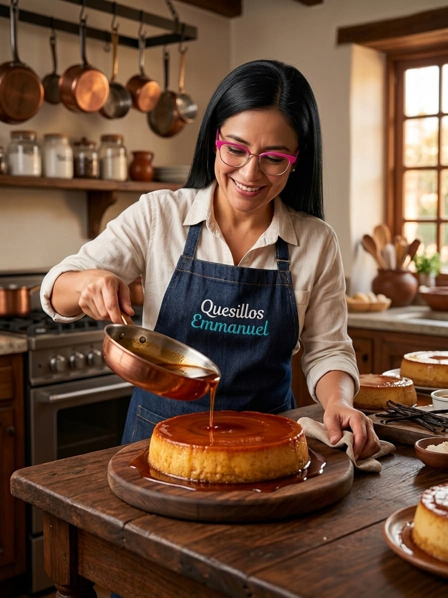

Tu antojo tiene nombre: quesillo.
Hacer pedido

Nosotros
En Quesillos Emmanuel nos apasiona crear deliciosos quesillos con un sabor casero, suave y cremoso. Cada uno de nuestros productos es preparado con dedicación y cuidado, utilizando ingredientes de calidad para ofrecer un postre delicioso en cada cucharada.
Buscamos conservar el sabor tradicional del quesillo y, al mismo tiempo, darle nuestro toque especial para convertir cada ocasión en un momento dulce e inolvidable.
❤️ Nuestra misión
Endulzar tus momentos con quesillos preparados con calidad, dedicación y mucho sabor.
✨ Nuestra visión
Ser una marca reconocida por ofrecer quesillos deliciosos, de calidad y preparados con el cariño que caracteriza a Quesillos Emmanuel.
Quesillo Quesillos Emmanuel
- Peso: 1kg 200g
- Porciones: Rinde 8 porciones
- Precio: $28.000 COP
Testimonios
"El mejor quesillo que he probado, súper cremoso y con el dulce perfecto. ¡Totalmente recomendado!"
- Laura P.
"Pedimos uno para el cumpleaños de mi mamá y a todos les encantó. Se nota la calidad de los ingredientes."
- Carlos M.
"Muy rico y excelente presentación. El pedido llegó a tiempo."
- Andrea R.